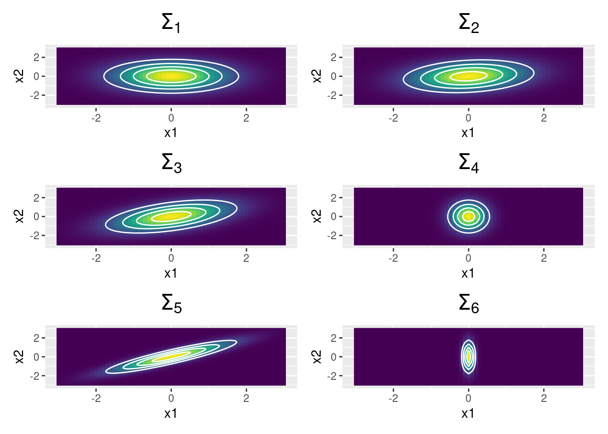

TP2: Implementación del algoritmo de Metropolis-Hastings
Metropolis-Hastings en 1D
El algoritmo de Metropolis-Hastings (MH) permite obtener muestras de una distribución de probabilidad \(f^*(\theta)\), incluso aunque esta sea impropia (es decir, incluso aunque sea desconocida la constante de normalización que hace que la integral en el soporte de la función sea igual a uno). Basta con que se pueda evaluar \(f^*(\theta)\) en cualquier valor de \(\theta\).
Escriba una función que implemente el algoritmo de MH para tomar muestras de una función de probabilidad unidimensional dada. Separe en funciones cada uno de los pasos del algoritmo. Otorgue flexibilidad al algoritmo permitiendo elegir diferentes puntos de inicio y diferentes distribuciones de propuesta de transición: normal de una varianza dada y beta de una determinada concentración.
Utilizando la función propuesta, obtener 3000 muestras de la distribución dada por
\[ g^*(x) = \begin{cases} x^4 e^{-x} & \text{si } x \geq 0 \\ 0 & \text{si } x<0 \end{cases} \]
Compare las cadenas obtenidas al utilizar diversas distribuciones de propuesta de transición: tres normales de varianzas diferentes y tres betas de concentración diferente. Calcule la tasa de aceptación. Compare utilizando histogramas y funciones de autocorrelación. Para elegir el punto inicial del algoritmo de MH, grafique la función de densidad y busque un punto conveniente.
Utilizando cada una de las seis cadenas anteriores, compute la media de la distribución, los percentiles 5 y 95, y la esperanza de \(\sqrt{X}\) sabiendo que \(X\) se distribuye según \(g^*(x)\)
Para cada uno de los seis casos anteriores, estime el tamaño efectivo de muestra (ESS). Luego, estime el MCSE de los valores de \(\mathbb{E}(X)\) para cada caso.
Para cada uno de los casos anteriores de distribución propuesta, obtenga cinco cadenas que partan de diferentes puntos iniciales. Estudie gráficamente la convergencia y, en caso de ser necesario, descarte muetras iniciales. Calcule el estadístico de Gelman-Rubin \(\hat{R}\)
Elija la mejor distribución de probabilidad para transiciones que le permita tomar muestras de la función de densidad:
\[ h^*(x) = e^{-\frac{4}{10} (x - \frac{4}{10})^2 - \frac{2}{25}x^4} \]
Considere un experimento binomial a partir del cual se quiere determinar la probabilidad de éxito \(\theta\). Se realiza el experimento se obtienen 6 éxitos en 10 intentos. Obtenga la distribución a posteriori de \(\theta\) si la creencia a priori viene dada por
\[ p(\theta) = 2 \theta \qquad \theta \in [0,1] \]
Metropolis-Hastings en 2D
Se desean tomar muestras de una normal bivariada asimétrica cuya función de densidad viene dada por
\[ f(\mathbf{x}) = 2\ \phi_2(\mathbf{x} \mid \mathbf{0}, \pmb{\Omega}) \ \Phi(\pmb{\alpha}^T\mathbf{x}) \qquad \mathbf{x} \in \mathbb{R}^2 \]
siendo \(\phi_2(\mathbf{x}\mid\mathbf{0},\mathbf{\Omega})\) la función de densidad de la normal bivariada de media \(\mathbf{0}\) y matriz de covarianza \(\mathbf{\Omega}\), \(\Phi(\pmb{\alpha}^T\mathbf{x})\) es la función de probabilidad acumulada de la normal estándar \(\mathcal{N}(0,1)\) y \(\pmb{\alpha} \in \mathbb{R}^2\) es un vector de parámetros.
En este caso, se tiene:
\[ \mathbf{\Omega} = \begin{bmatrix}1.5 & 0.6 \\ 0.6 & 1.5 \end{bmatrix} \]
y
\[ \pmb{\alpha} = [2 \quad 0] \]
- Escriba una función que implemente el algoritmo de Metropolis-Hastings para tomar muestras de una función de probabilidad bivariada dada. Separe en funciones cada una de los pasos del algoritmo. La probabilidad de salto será normal bivariada de matriz de covarianza variable. Otorgue flexibilidad al algoritmo haciendo que reciba como argumento la matriz de covarianza de la probabilidad de transición.
Se utilizará una normal bivariada para proponer un salto en el algoritmo de Metropolis-Hastings. Se explorará el efecto de diferentes distribuciones de probabilidad para el salto, en función de diferentes matrices de covarianza \(\mathbf{\Sigma}\). Si se representa a \(\mathbf{\Sigma}\) de la siguiente manera
\[ \mathbf{\Sigma} = \begin{bmatrix} \sigma_1 & 0 \\ 0 & \sigma_2 \end{bmatrix} \begin{bmatrix} 1 & \rho \\ \rho & 1\end{bmatrix} \begin{bmatrix} \sigma_1 & 0 \\ 0 & \sigma_2 \end{bmatrix} \]
donde \(\sigma_i\) representa el desvío estándar de la componente \(i\) y \(\rho\) la correlación entre las variables \(X_1\) y \(X_2\), entonces se deberán ensayar los siguientes casos:
- \(\sigma_1 = \sigma_2\) y \(\rho = 0\)
- \(\sigma_1 > \sigma_2\) y \(\rho = 0\)
- \(\sigma_1 < \sigma_2\) y \(\rho = 0\)
- \(\sigma_1 = \sigma_2\) y \(\rho > 0\)
- \(\sigma_1 = \sigma_2\) y \(\rho < 0\)
#| warning: false
#| cache: true
#| echo: false
#| fig.width: 8
#| fig.height: 12
#| fig.align: center
data <- tidyr::crossing(x1 = seq(-3, 3, 0.1), x2 = seq(-3, 3, 0.1))
Mu <- replicate(6, c(0, 0), simplify = FALSE)
Sigma <- list(
matrix(c(1, 0, 0, 1), nrow = 2),
matrix(c(1, 0.2, 0.2, 1), nrow = 2),
matrix(c(1, 0.5, 0.5, 1), nrow = 2),
matrix(c(0.1, 0, 0, 1), nrow = 2),
matrix(c(1, 0.9, 0.9, 1), nrow = 2),
matrix(c(0.01, 0, 0, 1), nrow = 2)
)
index <- 1
plot_list <- purrr::map2(Mu, Sigma, function(x, y) {
title_str <- paste0("$\\Sigma_", index, "$")
plt <- data |>
mutate(f = mvtnorm::dmvnorm(data, x, y)) |>
ggplot() +
geom_raster(aes(x = x1, y = x2, fill = f)) +
stat_contour(aes(x = x1, y = x2, z = f), col = "white", bins = 5) +
viridis::scale_fill_viridis() +
labs(title = latex2exp::TeX(title_str)) +
theme(
legend.position = "none",
plot.title = element_text(hjust = 0.5, size = 18)
)
index <<- index + 1
return(plt)
})
plt <- Reduce(`+`, plot_list) +
plot_layout(ncol = 2)
plt
TO DO: Revisar gráficos
- Para al menos dos de los cinco casos anteriores, comparar las trayectorias seguidas por las cadenas al obtener muestras de \(f(x)\).